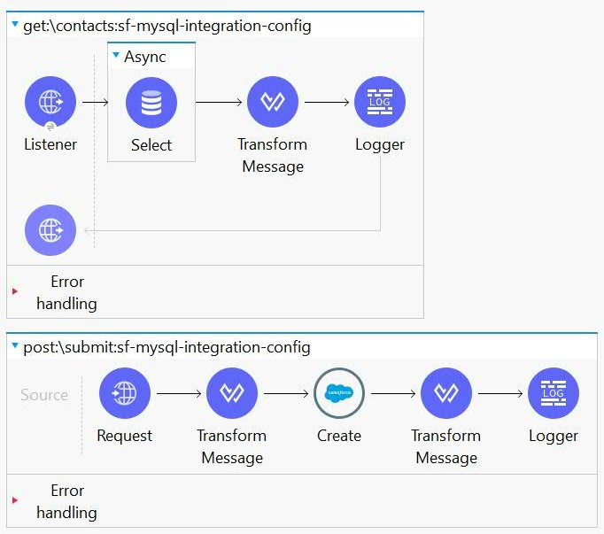
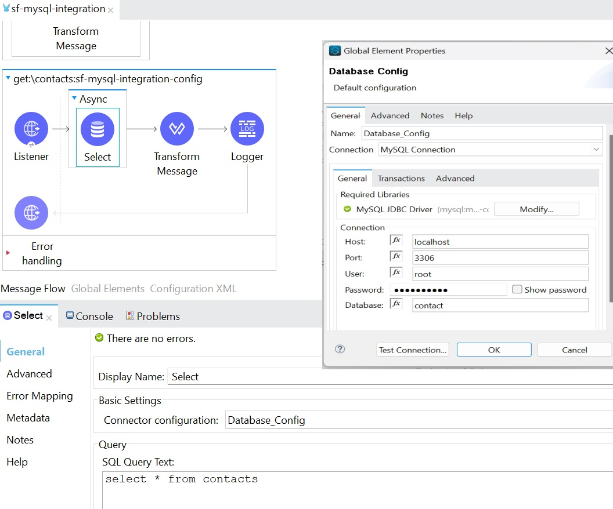
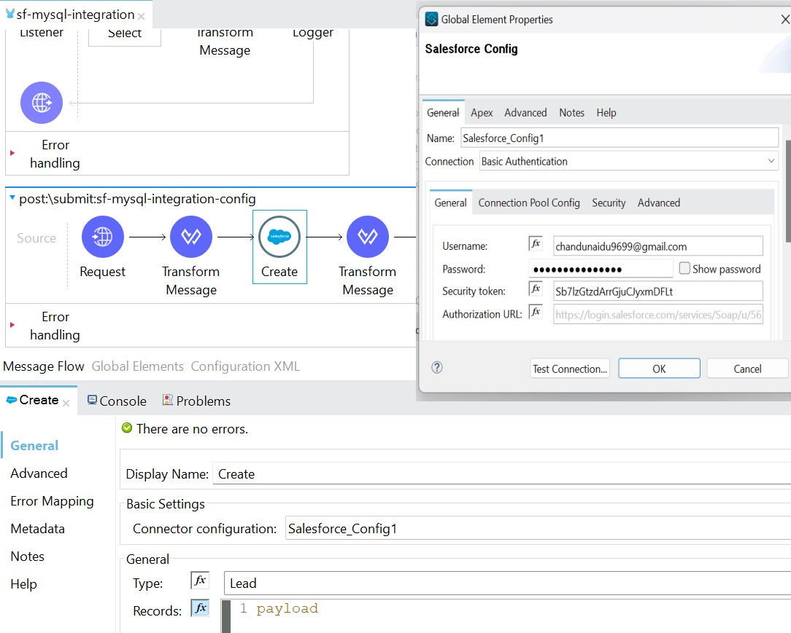

As a part of my training we have done a project which involves MYSQL & SALESFORCE by using MULESOFT.
Introduction
The MuleSoft application is designed to facilitate the integration between Salesforce and MySQL databases. It handles incoming API requests, performs data retrieval from MySQL, and supports data submission to Salesforce. The application follows best practices for error handling, logging, and data transformation.
Configuration
Namespaces
The application utilizes various XML namespaces for MuleSoft modules, including API Gateway, Salesforce, Database, HTTP, and others. These namespaces define the modules and features used in the application.
Configurations
HTTP Listener Config:
Configuration for an HTTP listener with the name "sf-mysql-integration-httpListenerConfig," listening on host "0.0.0.0" and port "8082."
APIKit Config:
Configuration for APIKit with the name "sf-mysql-integration-config," referencing an API specification file ("sf-mysql-integration.raml").
Database Config:

Configuration for MySQL database connection with the name "Database_Config," specifying connection details such as host, port, user, password, and database.
Salesforce Config:

Configuration for Salesforce connection with the name "Salesforce_Config," providing Salesforce credentials and security token.
Autodiscovery:
API Gateway autodiscovery configuration with an API ID and flow reference to "sf-mysql-integration-main."
HTTP Request Config:
Configuration for making HTTP requests to "sfdb.us-e2.cloudhub.io" with the name "HTTP_Request_configuration."
Flows
Main Flow: sf-mysql-integration-main
The main flow handles incoming API requests, routes them using APIKit, and includes error handling. It serves as the entry point for the application.
Console Flow: sf-mysql-integration-console
This flow is configured to serve the API console, providing a user-friendly interface for exploring and testing the API.
Data Retrieval Flow: get:\contacts:sf-mysql-integration-config
This flow performs asynchronous data retrieval from the MySQL "contacts" table and transforms the data into a specified JSON format.
Data Submission Flow: post:\submit:sf-mysql-integration-config
This flow handles data submission to Salesforce. It includes transformations and utilizes the Salesforce create operation.
Components
HTTP Listener Config
The HTTP listener configuration specifies the host and port on which the application listens for incoming API requests.
APIKit Config
APIKit configuration defines the integration with RAML-based APIs. The configuration includes the name, API specification file reference, and other settings.
Database Config
Database configuration contains details for connecting to the MySQL database, such as host, port, user, password, and database name.
Salesforce Config
Salesforce configuration includes credentials and security token for establishing a connection to Salesforce.
Autodiscovery
API Gateway autodiscovery configuration allows the automatic discovery of APIs, enhancing the application's modularity and maintainability.
HTTP Request Config
HTTP request configuration specifies the details for making HTTP requests, including the host to which requests are made.
Transformations
The application utilizes DataWeave transformations to convert data between different formats, ensuring compatibility between systems.
Logger
Log statements are strategically placed using the logger component to provide insights into the application's execution and facilitate troubleshooting.
Error Handling
The application includes an error-handler section that handles various APIKIT error types, providing meaningful error messages and appropriate HTTP statuses.
Deployment
Instructions for deploying the MuleSoft application to the desired runtime environment, ensuring proper configurations and dependencies are met.
Testing
Guidelines for testing the application, including unit testing, integration testing, and API testing, to ensure functionality and performance.
Monitoring
Recommendations for monitoring the application in production, including key performance indicators, logging, and alerting mechanisms.
Troubleshooting
A troubleshooting guide for common issues and challenges that may arise during the development, deployment, or operation of the application.
Conclusion
A summary of the MuleSoft application, acknowledging its purpose, features, and potential areas for improvement. Additionally, contact information for support and further inquiries.